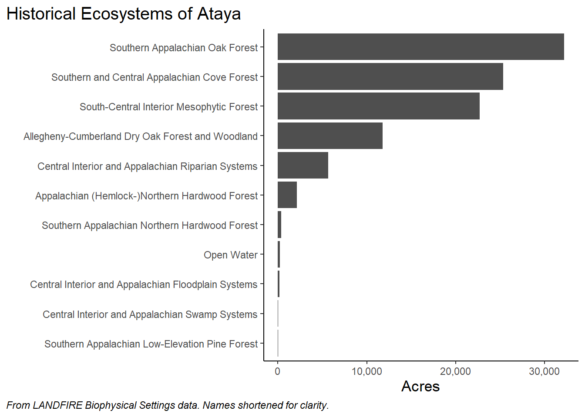

3 Historical Ecosystems
In this chapter we will learn which ecosystems, and how much of each were on our landscape historically.
Start by opening the “historical” tab in the Excel workbook.
- In the Pivot Table Fields pane, select BpS Name then acres.
- Right click in the top “Sum of ACRES” field (not the table header), then sort in descending order.
- In our example we have some BpSs that have low ACRES values. We also have categories that are not meaningful, such as “Barren-Rock/Sand/Clay”. We can do a little formatting/cleaning before making a chart:
- To remove BpSs from the table you will click the drop-down menu to the right of “BPS_NAME” in the Pivot Table Fields pane. You can uncheck BpSs as appropriate.
- It is also possible to filter by right clicking on the top value in the list of BpSs, then selecting Filter > Top 10…. Once in that menu you can refine the filtering.
- To get percentages, drag “ACRES” from the top Pivot Table Field pane to the “Values” pane. This will add a second “ACRES” column to the table. Click the drop down in the second instance of “ACRES” (reads “SUM of ACRES2” in our example), then Value Field Settings. In this menu select the “Show Values As” tab, click the “Show Values As” drop down then select “% of Grand Total% to get percentages of each BpS (make sure that”BPS_NAME" is selected as the “Base field”).
- To get a “running total” of percentages you will add a third instance of “ACRES” to the “Values” pane, then Value Field Settings. In this menu select the “Show Values As” tab, click the “Show Values As” drop down then select “% Running Total In” to get running totals of percentages of each BpS (make sure that “BPS_NAME” is selected as the “Base field”).
- Save and keep this pivot table as is for now. We will make a couple modifications in the next section to get at a different question.
Formatted table of BpSs:
We see that the top 4 BpSs comprised ~80% of our example landscape historically. We can visually confirm this and other patterns with a quick chart made in R (though similar charts available in Excel):
